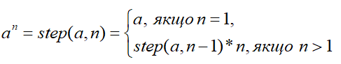
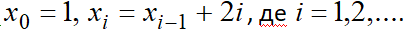
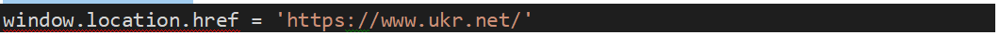

Задача 0. Реалізувати рекурсивну функцію знаходження степеня числа а

Задача 1. Нехай  Визначити x10.
Розв’язати з використанням рекурсивних і нерекурсивних алгоритмів
Задача 2. Реалізувати бінарний пошук (розглядали на попередніх уроках)
з використанням рекурсивного алгоритму.
Задача 3. З використанням замикань розробити ітератор, тобто функцію,
що буде поступово за окремими викликами видавати по одному значенню
від заданого мінімального до заданого максимального. Якщо значення
досягне максимального, то наступним буде мінімальне значення. З
використанням цієї функції реалізувати перебір номерів місяців.
Задача 5. Тренажер додавання. Кожні 10 секунд користувачу задають
випадковий приклад з додавання двох цифр і робиться перевірка.
Задача 6. Через 20 секунд перейти на сайт ukr.net. Для цього через 20
секунд після відкриття треба виконати команду
